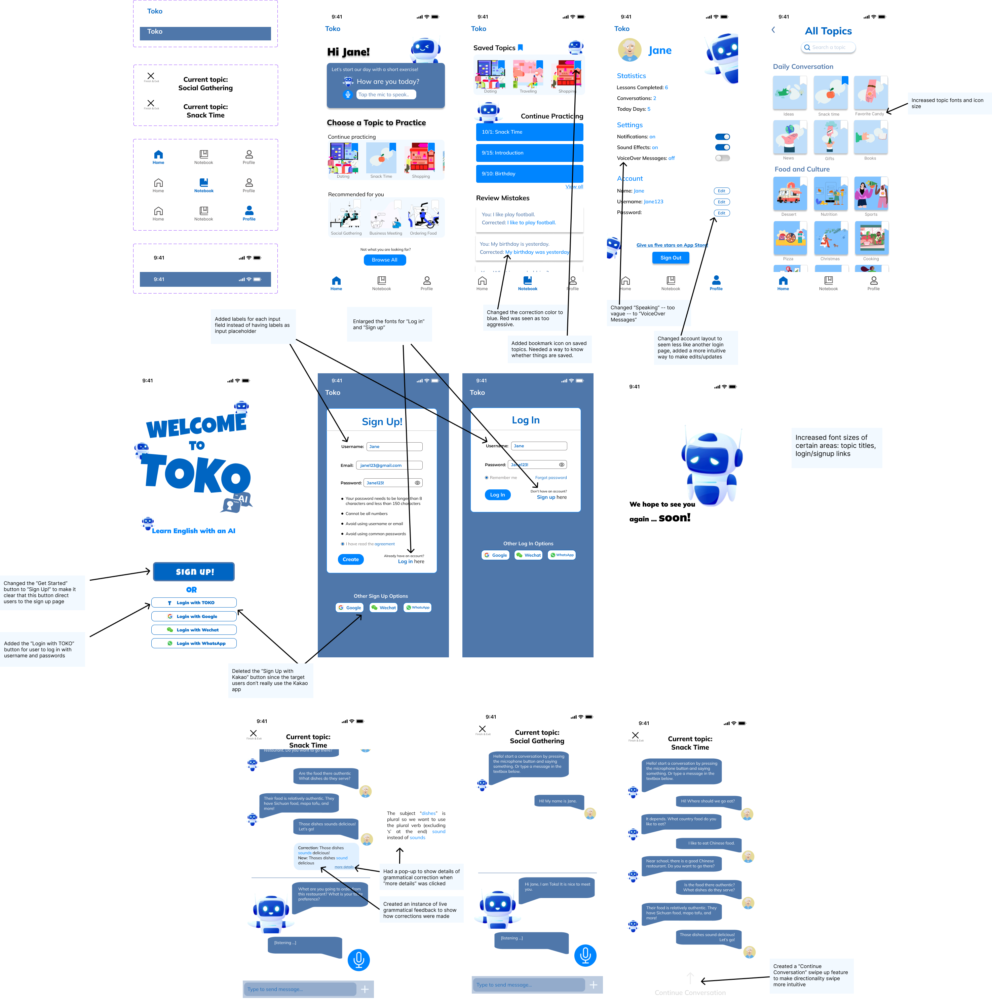

Iterative Design & Evaluation
Overview
In this project, alongside a group of four, I designed an interactive interface for an emerging startup. Our goal was to create an interface on a mobile app to solve the same problem the startup was trying to solve without looking at any existing prototypes. We went through a full process from creating sketches and mock-ups to user testing with a revised hi-fi prototype.
We chose a startup called Toko. Toko is a mobile app that helps users learn English and gain fluency by having realistic conversations with an AI bot. The conversations are suggestions by choosing through a list of different topics, and the AI bot gives instant grammatical corrections and feedback. The startup’s target audience is mainly learners in East Asia. The users who our interface would impact would be non-native English speakers. Due to the fact that the app is a language learning app, it has a very specific target user audience.
Sketches
To brainstorm a variety of screen designs, we each did some sketches of possible designs. We wanted to consider several options before deciding on one conception, so we completed our sketches separately before discussing the results.

Low-Fidelity Wireframe With Annotations
After our brainstorm, we combined our ideas into a final set of wireframes. The annotations describe some of the design decisions we made. Link to view it in Figma

Mockup Critiques & Final High-Fidelity Wireframe
After creating our first iteration of prototypes, we attended a critique session and received feedback on our design. A summary of the feedback we received follows:
Critiques Summary
- Text across the app was too small. Specifically, “view all” buttons, “browse all”, topic names, and sign up instructions, which we made bigger.
- The login screen flows were confusing. We streamlined this into one sign up page and one login page.
- We had inconsistent use of bookmark icons for saved topics. We added bookmark icons to every topic to allow users to save topics.
- We had inconsistent titles for the “Continue Practicing” sections on the home and notebook pages. We made these sections’ titles the same to make it clear these were the same section.
- We used red text for mistake corrections, which was seen as too aggressive. We changed this to blue.
- Our prototype did not show that corrections were made in real time on the chat screen. We added grammatical corrections and a pop-up explanation.
- To better use the touch interface, we added a swipe up functionality to continue the conversation on the transcript screen.
- The profile page had no way to edit account details, so we added edit buttons.
Final High-Fidelity Prototype
After the first round of critiques, we updated our prototype according to the feedback we received. The final version appears below.
Link to play with the prototype in Figma
User Testing
We then submitted our prototype to a user testing website called UserTesting to get feedback from test users through a usability test. The instructions and tasks we presented to our testers appear here:
Scenario
This is a prototype of a language app that teaches non-native English speakers English by having realistic chats with an AI bot about different topics.
Imagine you are trying to learn English in this app. Navigate through the app and learn about different topics and interact with the app by completing the given tasks!
Tasks
- Imagine you are trying to learn English in this app. Navigate through the app and try to chat about the topic “Social Gathering.”
- Next, imagine that you’ve previously already learned about the topic: “Snack Time.” Try to go back to that topic and continue the conversation. Then try to learn the details of the grammatical mistake that you made in the chat.
- Now, look back through your conversation so far; see if you can go back to the transcript.
- Go back to the home screen and navigate to view all the possible topics.
- Navigate through the app and try to log out.
User Testing Videos
Click on the pictures to watch our user testing videos


Result Analysis
The results of the user testing for each task are summarized below.
Task 1: Chat with the bot under the "Social Gathering" setting
- All three users were able to successfully find the “Social Gathering” topic and enter into the chat. The users said that it was easy to find.
Task 2: Continue the chat under the "Snack Time" setting
- All three users struggled with figuring out how to continue the conversation.
- The drag up functionality was not intuitive, and they all attempted to click the section and saw no response and did not try dragging. Only one user was able to figure it out and found the grammar correction pop up immediately.
- Possibly the drag up interaction on a phone would be more intuitive than simulating phone interactions on a computer. Regardless, this would be more intuitive with a button.
Task 3: Go back to transcript and view history under the "Snack Time" setting
- Since some users were unable to navigate to the continued conversation page, they did not understand where the transcript was.
- One user that did find the page, thought that the arrow signs were confusing, leading her to misidentify which page was the transcript.
Task 4: Go back to home screen and navigate all possible topics
- All three users were able to navigate back to the home screen by finding it on the bottom navigation menu bar. All users found this task to be very easy.
Task 5: Sign Out
- All the users were able to find the sign out button and found the task extremely easy.
- The sign out button being under the profile page was expected and intuitive.
Potential Interface Changes
Based on the user testing results, we found some interface problems with our current prototype.
- One of the main comments that we received from user testing was that for Task 2, it was not very intuitive on how to continue a previous conversation. We would potentially change our interface from swipe up to continue to a solid button so that the directionality of the arrow symbol does not confuse the user on which screen is supposed to be the "Transcript screen" and which screen is supposed to be the "Continue conversation screen".
- The other main issue was that users found it confusing that during a continued conversation, they could see the transcript while learning and as a static page. Users were not sure why there were two screens for the transcript. We would potentially change our interface to only show the static transcript page when viewing a previous conversation, and then if a user wanted to continue the conversation we would not have the option to open up the static transcript from the messaging page.
Summary
Interface design is a long process that involves several iterations of design, testing, feedback, and modification. Iterative prototyping is an essential part of creating user interfaces, and it is important to receive feedback at all stages of the design process to incorporate changes sooner. Most crucial is receiving user feedback, as real users can behave differently than what designers expect from a prototype. Since users get involved earlier in the iterative design process, it can lead to more useful, user-friendly products.